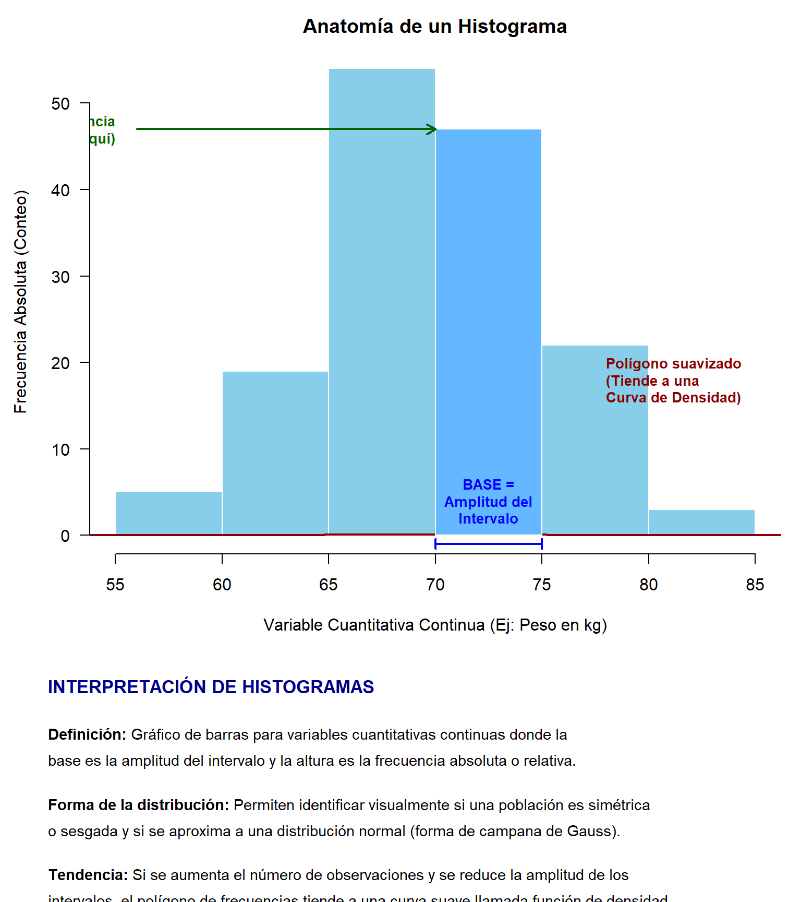
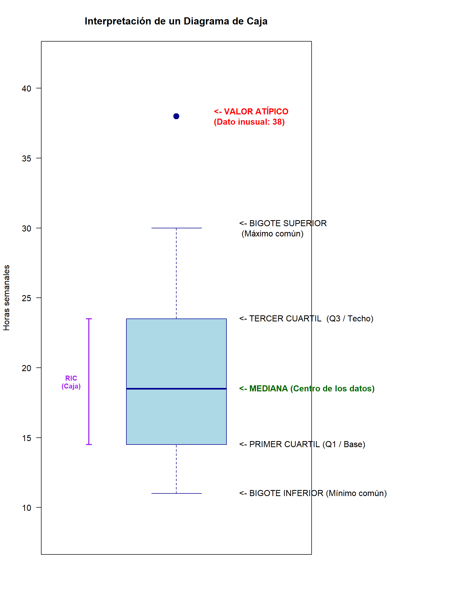
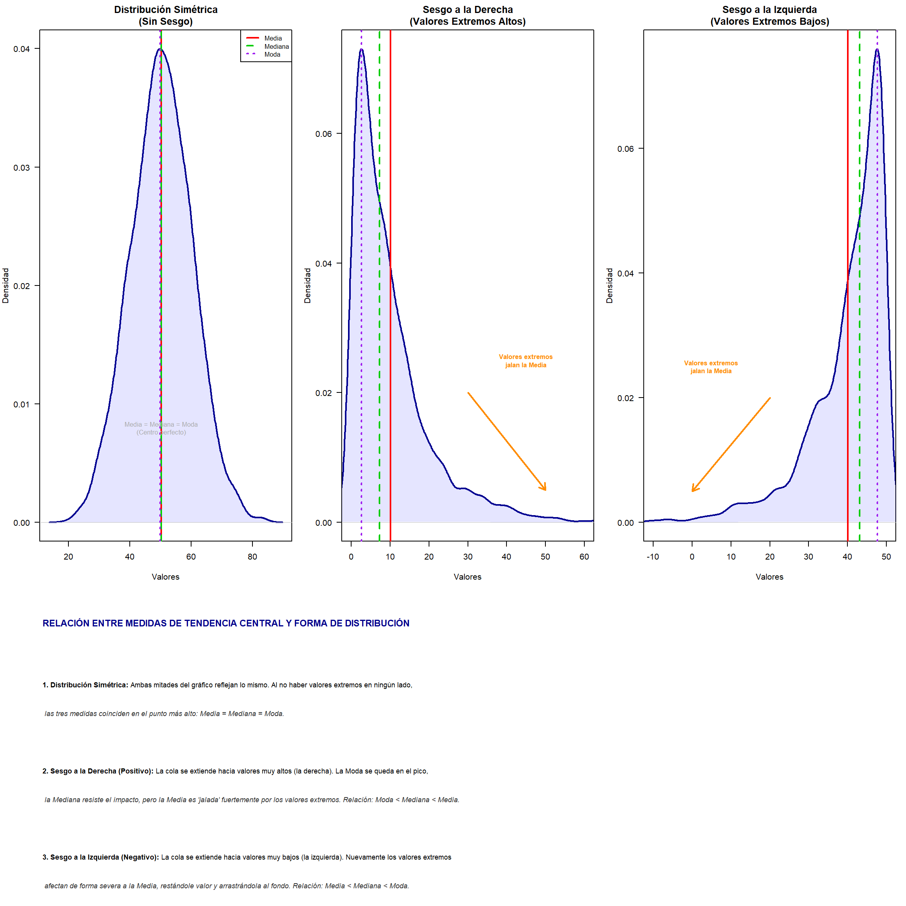
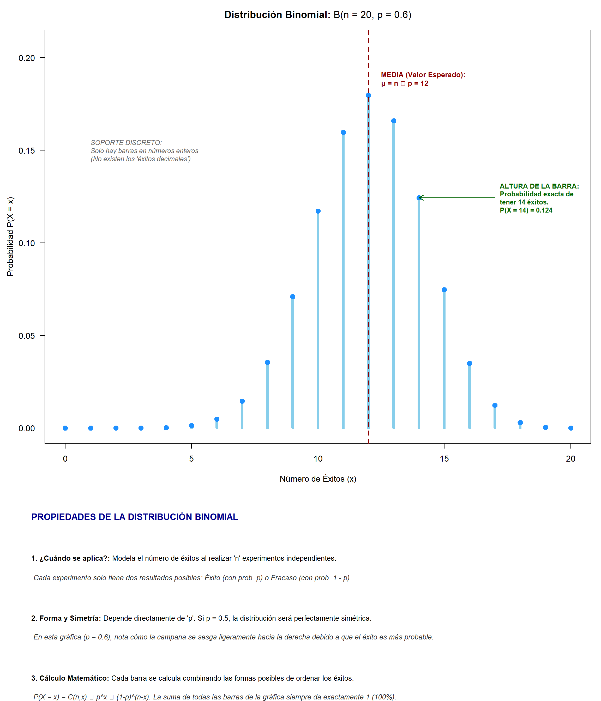
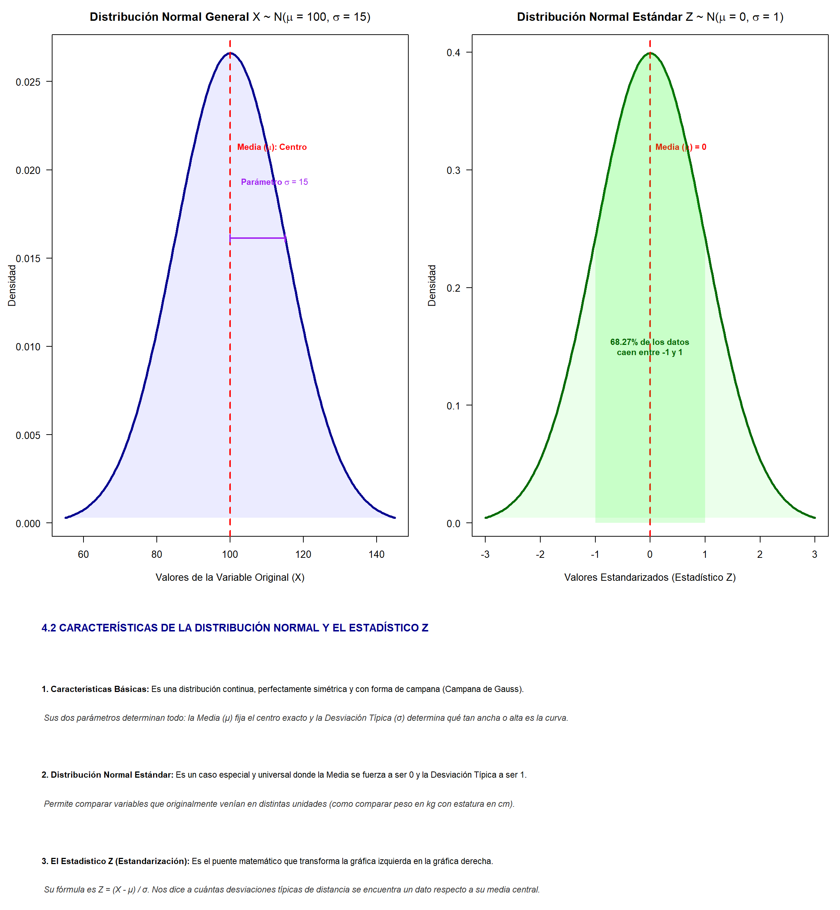
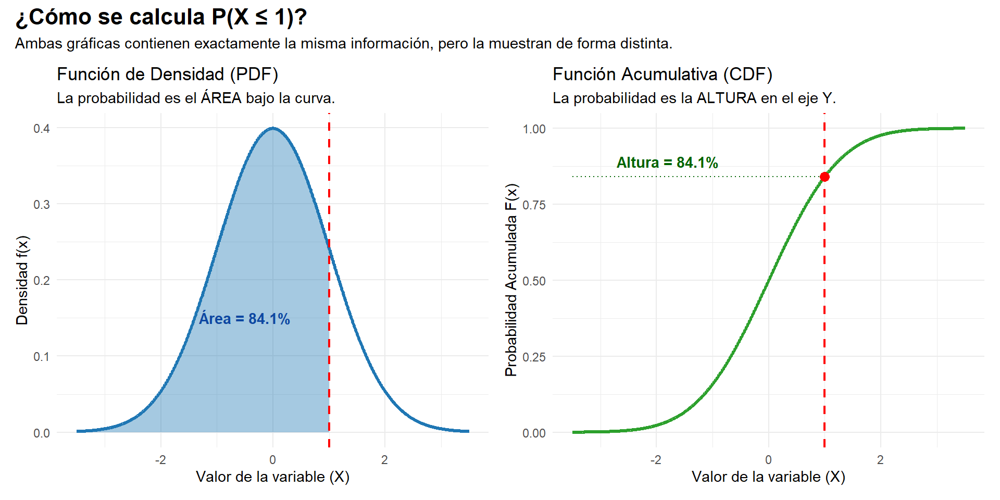
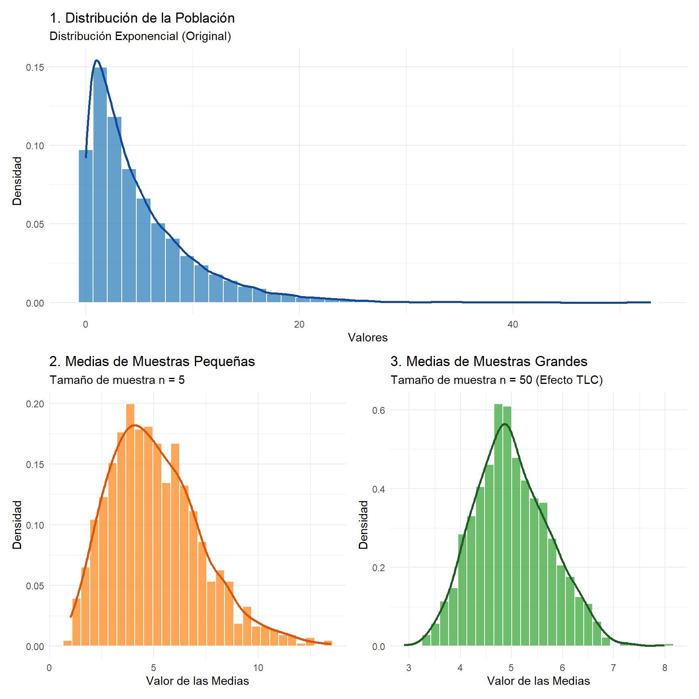
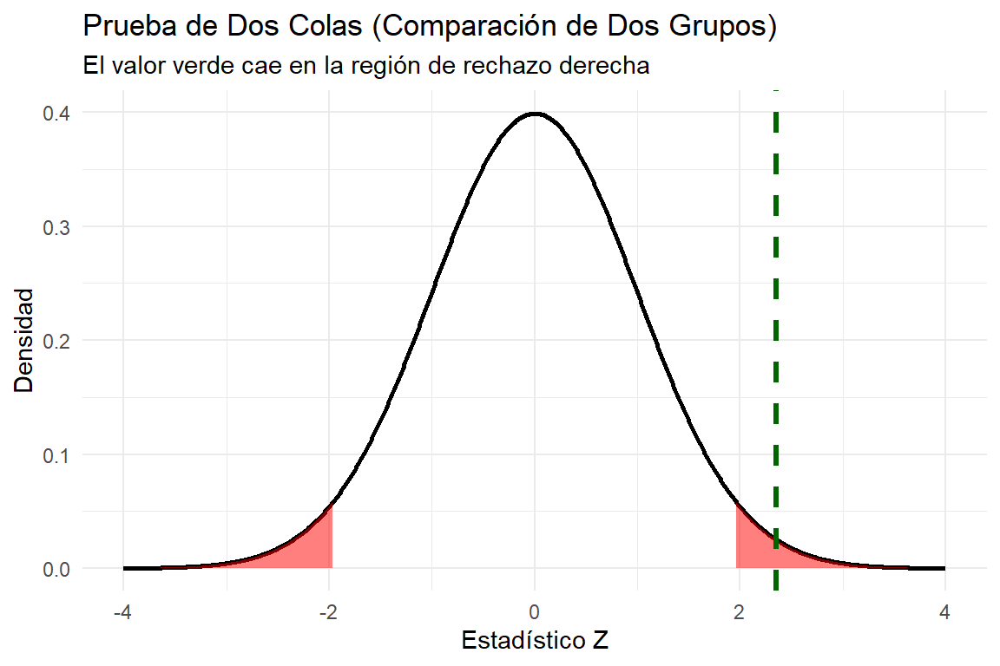

La estadística es la ciencia que se encarga de recolectar, organizar, resumir y analizar datos para, posteriormente, obtener conclusiones y realizar juicios científicos basados en ellos. Su propósito fundamental es ayudar en la toma de decisiones frente a la incertidumbre y la variación inherentes a los fenómenos naturales, industriales y científicos.
Las dos principales ramas de la estadística
De acuerdo con las fuentes, la estadística se divide en dos grandes áreas:
Estadística Descriptiva: Consiste en una colección de métodos para la organización, resumen y presentación de datos. Su función es proporcionar un sentido de la ubicación del centro de los datos, su variabilidad y la naturaleza general de su distribución a través de números (como la media o la desviación estándar) y herramientas gráficas (como histogramas o diagramas de caja).
Estadística Inferencial: Comprende el conjunto de técnicas que permiten obtener conclusiones o generalizaciones acerca de una población con un determinado grado de confianza, basándose únicamente en la información de una muestra. Mientras que la descriptiva solo reporta lo que hay en los datos, la inferencial va más allá para sacar conclusiones sobre el sistema científico completo.
Terminología y conceptos básicos
Para comprender el estudio de la estadística, es esencial manejar los siguientes términos definidos en los textos:
Población: Es la totalidad de los individuos, elementos u observaciones que son de interés en un estudio específico. Puede ser finita (como el número de estudiantes en una escuela) o infinita (como todas las posibles mediciones de la profundidad de un lago).
Muestra: Es un subconjunto de una población. Para que las inferencias sean válidas, debe ser una muestra aleatoria, lo que significa que sus elementos se eligen de forma independiente y al azar para evitar sesgos.
Variable: Es una característica de interés de un elemento de la población. Se clasifican en:
Cualitativas: Registran una cualidad o atributo (ej. sexo, estado civil).
Cuantitativas: Son mediciones numéricas. Pueden ser discretas (cuando resultan de un conteo y tienen valores finitos o numerables) o continuas (cuando pueden tomar cualquier valor en un intervalo, como el peso o la altura).
Parámetro: Es una característica constante de la población, como la media poblacional (\(μ\)) o la varianza poblacional (\(σ2\)).
Estadístico: Es cualquier función de las variables aleatorias que forman una muestra. Los valores calculados de estos, como la media muestral (\(\hat{x}\)) o la varianza muestral (s2), se utilizan para estimar los parámetros desconocidos de la población.
Observación: Se refiere a cualquier registro de información, ya sea numérico o categórico.
Experimento: Los estadísticos usan esta palabra para describir cualquier proceso que genere un conjunto de datos, incluso si se trata de observar datos históricos o realizar estudios de campo.
Medidas fundamentales de análisis
El análisis estadístico descriptivo utiliza principalmente dos tipos de medidas:
Medidas de Localización (o Tendencia Central): Indican el centro de los datos. Las más comunes son la media (promedio aritmético), la mediana (valor central que divide los datos en dos partes iguales) y la moda (el valor que más se repite).
Medidas de Variabilidad (o Dispersión): Reflejan qué tan esparcidos están los datos. Incluyen el rango (diferencia entre el valor máximo y el mínimo), la varianza (promedio de los cuadrados de las desviaciones respecto a la media) y la desviación estándar (la raíz cuadrada de la varianza).
A continuación, se presentan las definiciones de estos conceptos fundamentales de la estadística y la cartografía, fundamentadas en las fuentes proporcionadas:
Conceptos Estadísticos
Población: Se define como la totalidad de los individuos, elementos u observaciones de un tipo específico que son de interés en un estudio determinado. Las poblaciones pueden ser finitas (un número limitado de elementos) e infinitas (cuando el número de observaciones no tiene límite predecible, como mediciones sucesivas de un fenómeno natural).
Muestra: Es un subconjunto representativo de una población. Dado que suele ser imposible o poco práctico medir a cada integrante de una población completa, se trabaja con una muestra para inferir las características del grupo mayor. Una muestra se considera aleatoria si sus elementos se eligen de forma independiente y al azar para evitar sesgos.
Parámetro: Es una característica numérica constante que describe a una población completa. Se consideran “valores verdaderos” que generalmente permanecen desconocidos y deben ser estimados. Los parámetros suelen representarse con letras griegas, como μ (media poblacional) y σ2 (varianza poblacional).
Estadístico muestral: Es cualquier función calculada a partir de las variables que forman una muestra. A diferencia de los parámetros, los estadísticos son variables aleatorias porque su valor cambia de una muestra a otra. Se utilizan como estimadores para obtener conclusiones sobre los parámetros de la población. Comúnmente se representan con letras romanas, como xˉ (media muestral) y s2 (varianza muestral).
Conceptos de Calidad de Datos
Exactitud: Se refiere al grado de cercanía o coincidencia entre un valor medido (u observado) y su valor real o verdadero. En el ámbito geoespacial, la exactitud mide qué tan próxima está la localización registrada de un rasgo respecto a su ubicación real sobre la superficie de la Tierra.
Precisión: Describe la consistencia o dispersión de medidas repetidas de un mismo valor; es decir, qué tan parecidos son los resultados entre sí cuando se repite un proceso. También se refiere al nivel de detalle o la unidad más pequeña con la que se registran los datos (por ejemplo, el número de dígitos decimales).
Diferencia clave: Es posible tener una alta precisión pero baja exactitud; esto ocurre cuando las mediciones son muy consistentes entre sí (están agrupadas), pero están alejadas sistemáticamente del valor real.
13.1 Estadística descriptiva
La estadística descriptiva es la rama de la estadística que se encarga de la recopilación, organización, resumen y presentación de datos, permitiendo describir las características fundamentales de una población o muestra mediante números y herramientas gráficas sin realizar generalizaciones más allá de los datos mismos. Su objetivo principal es ofrecer un sentido de la ubicación del centro de los datos, su variabilidad y la naturaleza de su distribución.
2.1 Medidas de tendencia central
Estas medidas están diseñadas para proporcionar valores cuantitativos que identifiquen el punto central o la ubicación típica de un conjunto de datos.
Media aritmética (\(\hat{x}\)): Es el promedio numérico que se obtiene sumando todos los valores de la muestra y dividiendo el resultado entre el número total de observaciones (n). En términos físicos, actúa como el centroide o punto de equilibrio del sistema de datos.
Propiedad clave: Es muy sensible a valores extremos (atípicos), los cuales pueden desplazarla significativamente del centro real del conjunto.
Mediana (\(\hat{x}\)o\(Q_{x}\)): Es el valor que ocupa la posición central cuando los datos están ordenados de forma ascendente, dividiendo la distribución en dos partes iguales (corresponde al percentil 50).
Propiedad clave: A diferencia de la media, no se ve influida por valores extremos, por lo que a menudo refleja mejor el “centro” en distribuciones asimétricas.
Cálculo: Si el número de datos es impar, es el dato central; si es par, es el promedio de los dos datos centrales.
Moda: Se define como el valor que ocurre con mayor frecuencia absoluta en la distribución.
Tipos: Una distribución puede ser unimodal (una moda), bimodal (dos modas) o multimodal (más de dos).
Propiedad clave: Es el único parámetro de tendencia central que tiene sentido para variables cualitativas o nominales.
2.2 Medidas de dispersión
Estas medidas indican qué tan agrupados o esparcidos están los datos alrededor de las medidas de tendencia central, especialmente respecto a la media.
Rango: Es la medida de variabilidad más simple y se calcula como la diferencia entre el valor máximo y el valor mínimo del conjunto de datos. Indica la longitud total del intervalo en el que se hallan las observaciones.
Varianza (s2 o σ2): Es el promedio de los cuadrados de las desviaciones de cada dato respecto a la media aritmética.
Concepto de n−1: En la varianza muestral, se divide entre n−1 (grados de libertad) en lugar de n para obtener un estimador insesgado de la varianza poblacional.
Inconveniente: Se expresa en unidades al cuadrado respecto a los datos originales, lo que dificulta su interpretación directa.
Desviación estándar (s o σ): Es la raíz cuadrada positiva de la varianza.
Ventaja: Al expresarse en las mismas unidades que los datos originales, es la medida de dispersión más utilizada en aplicaciones prácticas. Una desviación estándar pequeña indica que los datos están muy cerca de la media; una grande indica mayor dispersión.
En el contexto del análisis espacial, estas medidas pueden aplicarse gráficamente para obtener un “centro medio” o promedio espacial basándose en las coordenadas X e Y de una distribución de puntos.
13.1.1 1. Fórmulas Poblacionales (Cuando tienes los datos de TODO el grupo)
Se utilizan letras griegas (\(\sigma^2\) y \(\sigma\)) porque representan los parámetros reales de toda la población.
Desviación Estándar Poblacional (\(\sigma\)): Es simplemente la raíz cuadrada de la varianza. \[\sigma = \sqrt{\frac{\sum_{i=1}^{n} (X_i - \mu)^2}{n}}\]
Donde: \(\mu\) es la media de la población y \(n\) es el tamaño de la población.
13.1.2 2. Fórmulas Muestrales (Cuando usas una muestra para estimar a la población)
Se utilizan letras latinas (\(s^2\) y \(s\)). Nota que aquí se divide entre \(n-1\) (conocido como corrección de Bessel) para que el cálculo sea un estimador insesgado y más preciso.
Donde: \(\bar{X}\) es la media de la muestra. \(n\) es el tamaño de la muestra.
13.1.3 Las medidas de forma
Las medidas de forma y las herramientas gráficas permiten describir la naturaleza de una distribución de datos más allá de su tendencia central y dispersión, ofreciendo una “huella digital” de la muestra.
2.3 Medidas de la forma: Coeficiente de sesgo y curtosis
Estas medidas describen cómo se distribuyen las observaciones en relación con su centro:
Sesgo (Skewness / Asimetría): Indica la falta de simetría de una distribución respecto a un eje vertical.
Distribución Simétrica: Se puede doblar por el eje vertical (media) y ambos lados coinciden.
Sesgo a la derecha (Positivo): Presenta una “cola” derecha larga y una izquierda corta; los datos se concentran en valores bajos.
Sesgo a la izquierda (Negativo): Presenta una “cola” izquierda larga; los datos se concentran en valores altos.
Curtosis: Aunque las fuentes no proporcionan una fórmula específica para el coeficiente, describen la forma de la curva en términos de su concentración. Una distribución normal tiene forma de campana, mientras que una mayor variabilidad (desviación estándar alta) genera una curva más baja y extendida (platicúrtica), y una variabilidad baja genera una curva más estrecha y alta (leptocúrtica).
Nota sobre el término “Sesgo”: Es importante distinguir entre el sesgo de una forma de distribución (asimetría) y el sesgo de un estimador, que ocurre cuando el valor esperado de un estadístico no coincide con el parámetro poblacional (sobreestima o subestima de forma consistente).
Código
# Instala los paquetes si no los tienes:# install.packages(c("ggplot2", "patchwork", "sn"))library(ggplot2)library(patchwork)library(sn)# Paquete excelente para simular distribuciones con sesgo realset.seed(123)# ==============================================================================# 1. VISUALIZACIÓN DEL SESGO (SKEWNESS)# ==============================================================================# Generamos datos con asimetría usando la distribución Normal Sesgada (sn)n_datos<-10000datos_simétricos<-rsn(n_datos, xi =0, omega =1, alpha =0)datos_sesgo_der<-rsn(n_datos, xi =0, omega =1, alpha =5)# Sesgo positivodatos_sesgo_izq<-rsn(n_datos, xi =0, omega =1, alpha =-5)# Sesgo negativodf_sesgo<-data.frame( valores =c(datos_sesgo_izq, datos_simétricos, datos_sesgo_der), Tipo =factor(rep(c("Sesgo a la Izquierda\n(Negativo)", "Simétrica\n(Normal)", "Sesgo a la Derecha\n(Positivo)"), each =n_datos), levels =c("Sesgo a la Izquierda\n(Negativo)", "Simétrica\n(Normal)", "Sesgo a la Derecha\n(Positivo)")))g_sesgo<-ggplot(df_sesgo, aes(x =valores, fill =Tipo))+geom_density(alpha =0.6, color ="black", size =0.3)+facet_wrap(~Tipo, scales ="free_x")+scale_fill_manual(values =c("#d95f02", "#7570b3", "#1b9e77"))+labs( title ="El Sesgo (Asimetría)", subtitle ="Mide hacia qué lado de la media se agrupan los datos y la longitud de las colas.", x ="Valores", y ="Densidad")+theme_minimal()+theme(legend.position ="none", plot.title =element_text(face ="bold", size =14))# ==============================================================================# 2. VISUALIZACIÓN DE LA CURTOSIS (KURTOSIS)# ==============================================================================# Para la curtosis comparamos distribuciones con distintas colas/picos:# Leptocúrtica: t-Student con pocos grados de libertad (colas pesadas, pico alto)# Mesocúrtica: Normal estándar# Platicúrtica: Uniforme (sin colas, chata)x<-seq(-4, 4, length.out =1000)df_curtosis<-data.frame( x =rep(x, 3), y =c(dt(x, df =3.5), dnorm(x), dunif(x, min =-2, max =2)), Tipo =factor(rep(c("Leptocúrtica\n(Alta / Colas pesadas)", "Mesocúrtica\n(Normal / Moderada)", "Platicúrtica\n(Chata / Colas ligeras)"), each =1000), levels =c("Leptocúrtica\n(Alta / Colas pesadas)", "Mesocúrtica\n(Normal / Moderada)", "Platicúrtica\n(Chata / Colas ligeras)")))g_curtosis<-ggplot(df_curtosis, aes(x =x, y =y, fill =Tipo))+geom_area(alpha =0.6, color ="black", size =0.3)+facet_wrap(~Tipo)+scale_fill_manual(values =c("#e41a1c", "#377eb8", "#4daf4a"))+labs( title ="La Curtosis (Apuntamiento)", subtitle ="Mide la concentración de datos en el centro vs la probabilidad de valores extremos (colas).", x ="Valores", y ="Densidad")+theme_minimal()+theme(legend.position ="none", plot.title =element_text(face ="bold", size =14))# ==============================================================================# DESPLIEGUE DEL PANEL COMPLETO# ==============================================================================g_sesgo/plot_spacer()/g_curtosis+plot_layout(heights =c(1, 0.1, 1))
13.1.4 Interpretación de histogramas y diagramas de caja
Estas herramientas proporcionan una visión visual rápida de las características elementales de una distribución.
histográma de frecuencias absolutas vs relativas
Interpretación de Histogramas
Definición: Gráfico de barras para variables cuantitativas continuas donde la base es la amplitud del intervalo y la altura es la frecuencia absoluta o relativa.
Forma de la distribución: Permiten identificar visualmente si una población es simétrica o sesgada y si se aproxima a una distribución normal (forma de campana).
Tendencia: Si se aumenta el número de observaciones y se reduce la amplitud de los intervalos, el polígono de frecuencias del histograma tiende a una curva suave llamada función de densidad.

¿Qué es cada cosa en esta gráfica y qué te está diciendo?
El eje horizontal (X): Representa tu variable continua (en este ejemplo, el peso de las personas). A diferencia de una gráfica de barras común donde cada barra es una “categoría” (como países o meses), aquí el eje es una línea numérica continua dividida en “cajas” o intervalos (por ejemplo, de 65 a 68 kg).
La Base de las barras: Es la amplitud del intervalo. Te dice qué tan ancho es el rango de valores agrupados en esa barra en específico. Todas suelen medir lo mismo.
El eje vertical (Y) y la Altura de las barras: Representan la frecuencia. Te dice cuántas observaciones de tu muestra cayeron exactamente dentro de ese intervalo. Si la barra es muy alta, significa que ese rango de valores es muy común en tu población.
La forma de “Campana” (Línea roja): Al ver la silueta del histograma, notarás que las barras del centro son las más altas y van bajando simétricamente hacia los lados. Esto te dice visualmente que tus datos tienen una distribución normal, donde la mayoría de la gente pesa cerca de los 70 kg y es raro encontrar extremos (gente que pese 50 kg o 90 kg).
Interpretación de Diagramas de Caja (Box-Whisker)
Reflejan de forma simple cinco estadísticas clave: el mínimo, primer cuartil (Q1), mediana, tercer cuartil (Q3) y máximo.
Localización y dispersión: La “caja” encierra el rango intercuartil (el 50% central de los datos), y la línea interna representa la mediana.
Identificación del sesgo:
Si la mediana está centrada y los “bigotes” tienen longitudes similares, la distribución es simétrica.
Si la mediana está desplazada hacia un extremo o los bigotes son de longitud desigual, la distribución es sesgada.
Valores atípicos (Outliers): Se representan como puntos aislados fuera de los bigotes. Un criterio común es considerar atípico cualquier valor que esté a más de 1.5 veces el rango intercuartil de los extremos de la caja. Estos valores pueden ser errores de registro o indicar fenómenos inusuales de gran interés científico.
Los bigotes representan el rango de los datos que se consideran “normales” o esperados, extendiéndose hacia los valores máximos y mínimos antes de toparse con los valores atípicos (outliers). Técnicamente, no se dibujan simplemente hasta los extremos absolutos de tus datos. Tienen una regla matemática muy clara basada en el Rango Intercuartílico (\(RIC = Q_3 - Q_1\)):
El bigote superior: Se extiende desde el tercer cuartil (\(Q_3\)) hasta el valor máximo real de tus datos, pero con un límite: no puede superar el valor de \(Q_3 + 1.5 \times RIC\).
El bigote inferior: Se extiende desde el primer cuartil (\(Q_1\)) hasta el valor mínimo real de tus datos, con el límite inverso: no puede bajar más allá de \(Q_1 - 1.5 \times RIC\). ¿Cómo interpretarlo visualmente en tus análisis?
Si un dato está dentro de los bigotes: Se considera parte de la variabilidad común y corriente de tu muestra.
Si un dato se sale de los bigotes: Verás que R los dibuja como puntos o asteriscos aislados. Esos son los valores atípicos (outliers), es decir, datos extremadamente raros, errores de dedo o anomalías que merecen ser estudiadas aparte.
La longitud de los bigotes: Te dice qué tan dispersos están tus datos en los extremos. Si el bigote superior es mucho más largo que el inferior, es una señal visual directa de que tus datos tienen un sesgo positivo (a la derecha).

13.1.5 Distribuciones simétricas y sesgadas, valores extremos, relación entre medidas de tendencia central en distribuciones simétricas y sesgadas.
La posición relativa de la media, la mediana y la moda cambia según la forma de la distribución: En Distribuciones Simétricas: La media, la mediana y la moda coinciden en el mismo punto central
En un diagrama de caja, la mediana aparecerá equidistante de los extremos y los “bigotes” tendrán longitudes similares
En Distribuciones Sesgadas: La Media: Es la medida más sensible a los valores extremos - En una distribución sesgada, la media es “arrastrada” hacia la cola larga - Por ejemplo, en un sesgo positivo, la media será mayor que la mediana
La Mediana: Es una medida robusta, lo que significa que no se ve influida significativamente por valores extremos, ya que prioriza la posición central del dato y no su magnitud absoluta
La Moda: Se mantiene en el punto de mayor frecuencia (el pico de la curva)
Orden típico en sesgo positivo (derecha): Moda < Mediana < Media
Orden típico en sesgo negativo (izquierda): Media < Mediana < Moda
En conclusión, cuando existen valores extremos o sesgo marcado, la mediana suele ser una medida más descriptiva del “centro” de los datos que la media aritmética, ya que esta última ofrece una visión distorsionada por los valores atípicos.
En estadística hay una regla de oro visual:
En una distribución Simétrica, la media, la mediana y la moda valen lo mismo y están en el centro.
En una distribución con Sesgo a la Derecha (Positivo), los valores extremos altos “jalan” a la media hacia la derecha, dejando la relación: \(\text{Moda} < \text{Mediana} < \text{Media}\).
En una distribución con Sesgo a la Izquierda (Negativo), los valores extremos bajos “jalan” a la media hacia la izquierda, dejando la relación: \(\text{Media} < \text{Mediana} < \text{Moda}\).

13.1.6 Descripción bivariada
La descripción bivariada (o estadística bidimensional) se encarga de estudiar simultáneamente dos variables sobre una misma población para identificar si existe una relación o asociación entre ellas. Mientras que la estadística univariada analiza las características de una sola variable, la bivariada busca comprender cómo el comportamiento de una magnitud influye o se desplaza junto a otra.
Los tres pilares fundamentales para este análisis son:
1. Diagramas de dispersión (Nube de puntos)
Es la herramienta gráfica primaria para visualizar la relación entre dos variables cuantitativas.
Representación: Consiste en un plano cartesiano donde cada par de valores (x,y) de un individuo se representa como un punto en las coordenadas correspondientes.
Utilidad: Permite detectar visualmente patrones, tendencias y la forma de la relación (lineal, curvilínea o ausencia de correlación).
Interpretación:
Si los puntos forman una banda estrecha y alargada, la relación es fuerte.
Si los puntos parecen dispersos de forma circular o aleatoria, existe ausencia de correlación.
Si al aumentar X también aumenta Y, la relación es directa; si Y disminuye, es inversa.
2. Covarianza
Es una medida numérica que indica el sentido de la asociación lineal entre dos variables.
Definición: Se define como el valor esperado del producto de las desviaciones de cada variable respecto a su media: \[\sigma_{xy} = E[(X - \mu_x)(Y - \mu_y)]\]
Interpretación del signo:
Positiva: Las variables tienden a moverse en la misma dirección (valores grandes de X con valores grandes de Y).
Negativa: Las variables se mueven en direcciones opuestas (valores grandes de X con valores pequeños de Y).
Cero: Indica que no hay una relación lineal, aunque podría existir una relación no lineal.
Limitación: Su magnitud depende de las unidades de medida de las variables, lo que impide comparar la fuerza de la relación entre distintos conjuntos de datos.
Coeficiente de correlación lineal (Pearson)
Para solucionar el problema de la escala de la covarianza, se utiliza el coeficiente de correlación de Pearson (r), que es una versión estandarizada o “sin unidades” de la asociación lineal.
Cálculo: Se obtiene dividiendo la covarianza entre el producto de las desviaciones estándar de ambas variables: \[r = \frac{\sigma_{xy}}{\sigma_x \cdot \sigma_y}\]
Rango de valores: Siempre oscila entre -1 y +1.
r=1: Correlación lineal positiva perfecta (todos los puntos están sobre una línea recta creciente).
r=−1: Correlación lineal negativa perfecta (puntos sobre una recta decreciente).
r=0: No existe relación lineal entre las variables.
Código
library(ggplot2)library(patchwork)set.seed(42)n<-150# ==============================================================================# 1. GENERACIÓN DE LOS ESCENARIOS# ==============================================================================# 1. Correlación Positiva Fuerte (cercana a +1)x1<-rnorm(n, mean =10, sd =2)y1<-2*x1+rnorm(n, mean =0, sd =1.5)df1<-data.frame(x =x1, y =y1)r1<-round(cor(x1, y1), 2)# 2. Correlación Negativa Fuerte (cercana a -1)x2<-rnorm(n, mean =10, sd =2)y2<--2*x2+rnorm(n, mean =0, sd =1.5)df2<-data.frame(x =x2, y =y2)r2<-round(cor(x2, y2), 2)# 3. Correlación Nula o Ausente (cercana a 0)x3<-rnorm(n, mean =10, sd =2)y3<-rnorm(n, mean =10, sd =2)df3<-data.frame(x =x3, y =y3)r3<-round(cor(x3, y3), 2)# 4. Relación No Lineal (Pearson falla aquí, r cercano a 0)x4<-seq(-3, 3, length.out =n)y4<-x4^2+rnorm(n, mean =0, sd =0.5)df4<-data.frame(x =x4, y =y4)r4<-round(cor(x4, y4), 2)# ==============================================================================# 2. CREACIÓN DE LAS GRÁFICAS# ==============================================================================g1<-ggplot(df1, aes(x =x, y =y))+geom_point(color ="#1f77b4", alpha =0.7, size =2)+geom_smooth(method ="lm", color ="#0d47a1", se =FALSE, size =1)+labs(title =paste("Correlación Positiva Fuerte (r =", r1, ")"), subtitle ="Si X sube, Y sube de forma lineal.", x ="X", y ="Y")+theme_minimal()g2<-ggplot(df2, aes(x =x, y =y))+geom_point(color ="#d62728", alpha =0.7, size =2)+geom_smooth(method ="lm", color ="#b71c1c", se =FALSE, size =1)+labs(title =paste("Correlación Negativa Fuerte (r =", r2, ")"), subtitle ="Si X sube, Y baja de forma lineal.", x ="X", y ="Y")+theme_minimal()g3<-ggplot(df3, aes(x =x, y =y))+geom_point(color ="#7f7f7f", alpha =0.7, size =2)+geom_smooth(method ="lm", color ="#424242", se =FALSE, size =1)+labs(title =paste("Correlación Nula (r =", r3, ")"), subtitle ="No hay un patrón lineal entre X e Y.", x ="X", y ="Y")+theme_minimal()g4<-ggplot(df4, aes(x =x, y =y))+geom_point(color ="#ff7f0e", alpha =0.7, size =2)+geom_smooth(method ="lm", color ="#e65100", se =FALSE, size =1, linetype ="dashed")+labs(title =paste("Relación No Lineal (r =", r4, ")"), subtitle ="¡Ojo! Hay una relación (parábola), pero Pearson no la detecta.", x ="X", y ="Y")+theme_minimal()# ==============================================================================# PANEL COMPLETO# ==============================================================================(g1+g2)/(g3+g4)+plot_annotation(title ="Comprendiendo el Coeficiente de Correlación de Pearson", subtitle ="El coeficiente evalúa únicamente la fuerza y dirección de relaciones estrictamente lineales.", theme =theme(plot.title =element_text(face ="bold", size =16)))

Coeficiente de determinación (\(r^2\)): Es el cuadrado del coeficiente de correlación y representa la proporción de la variabilidad de una variable que es explicada por la otra a través de la relación lineal. Por ejemplo, un r=0.6 implica que el 36% (0.62) de la variación total es explicada por el modelo.
Característica
Coeficiente de Pearson (\(r\))
Coeficiente de Determinación (\(R^2\))
¿Qué mide?
Dirección y fuerza de la relación lineal entre dos variables.
El éxito predictivo / proporción de variabilidad explicada por el modelo.
Escala / Rango
De \(-1\) a \(+1\)
De \(0\) a \(1\) (o de \(0\%\) a \(100\%\))
¿Importa el signo?
Sí. Indica si la relación es directa (\(+\)) o inversa (\(-\)).
No. Al ser un término cuadrático, siempre es positivo (no indica dirección).
Uso principal
Exploración inicial de datos (saber si existe asociación).
Evaluación de Modelos de Regresión (saber qué tan buena es la ecuación).
Conexión Matemática
Es la raíz cuadrada con signo de \(R^2\) en modelos lineales simples: \[r = \pm\sqrt{R^2}\]
En una regresión lineal simple, es literalmente el cuadrado de Pearson: \[R^2 = (r)^2\]
En conclusión, mientras el diagrama de dispersión ofrece una visión intuitiva y la covarianza el sentido de la relación, el coeficiente de correlación proporciona una medida exacta y comparable de la fuerza y dirección del vínculo lineal entre dos variables.

13.1.7 Introducción a la teoría de la probabilidad
La probabilidad es la rama de las matemáticas que modela experimentos aleatorios, es decir, aquellos cuyo resultado no es predecible bajo las mismas condiciones iniciales. Se define formalmente como un número real en el intervalo que mide la frecuencia con la que ocurre un evento. Existen tres enfoques principales para definirla:
Clásica (Laplace): Se basa en el cociente entre casos favorables y casos posibles, asumiendo que todos son equiprobables.
Frecuentista (Bernoulli): Es el límite al que se aproximan las frecuencias relativas de un suceso cuando el experimento se repite indefinidamente.
Axiomática (Kolmogorov): Establece reglas matemáticas precisas (axiomas) que toda medida de probabilidad debe cumplir.
3.1 Propiedades de la probabilidad
Toda medida de probabilidad debe satisfacer los Axiomas de Kolmogorov:
No negatividad:\(P(A)≥0\)
Certidumbre: La probabilidad del espacio muestral completo (\(E\) o \(Ω\)) es \(1\).
Aditividad: Para eventos incompatibles (disjuntos), la probabilidad de su unión es la suma de sus probabilidades individuales.
De estos axiomas se derivan propiedades fundamentales:
Suceso contrario:\(P(Ac)=1−P(A)\).
Suceso imposible: La probabilidad del conjunto vacío es cero \(P(∅)=0\).
Monotonía: Si un evento A está contenido en B, entonces \(P(A)≤P(B)\).
Regla de la suma general: Para eventos compatibles, \(P(A∪B)=P(A)+P(B)−P(A∩B)\).
3.2 Reglas probabilísticas
Probabilidad Condicionada: Es la probabilidad de que ocurra un evento A sabiendo que ya ha ocurrido un evento B. Se calcula como \(P(A∣B)=P(B)P(A∩B)\).
Regla del Producto: Permite hallar la probabilidad de que ocurran dos eventos simultáneamente: \(P(A∩B)=P(A)⋅P(B∣A)\).
Independencia: Dos sucesos son independientes si la ocurrencia de uno no afecta al otro, es decir, \(P(A∩B)=P(A)⋅P(B)\).
Teorema de la Probabilidad Total: Permite calcular la probabilidad de un suceso a partir de una partición del espacio muestral.
Dado un espacio muestral dividido en varios eventos \(A_1, A_2, \dots, A_n\) que son mutuamente excluyentes (no pueden ocurrir al mismo tiempo) y exhaustivos (cubren todas las posibilidades), la probabilidad de que ocurra un evento cualquiera \(B\) se calcula como: \[P(B) = \sum_{i=1}^{n} P(B|A_i)P(A_i)\]
Teorema de Bayes: Es fundamental para actualizar la probabilidad de una causa (hipótesis) dado que se ha observado un efecto \((dato)\).
Dados dos eventos, \(A\) y \(B\), donde la probabilidad de que ocurra \(B\) es mayor a cero (\(P(B) > 0\)):
\[P(A|B) = \frac{P(B|A)P(A)}{P(B)}\] Si el espacio muestral está dividido en un conjunto de eventos mutuamente excluyentes y exhaustivos \(A_1, A_2, \dots, A_k\) (es decir, las distintas causas posibles para que ocurra \(B\)), la fórmula para una causa específica \(A_i\) se escribe así: \[P(A_i|B) = \frac{P(B|A_i)P(A_i)}{\sum_{j=1}^{k} P(B|A_j)P(A_j)}\]
En palabras simples, el Teorema de Bayes es una máquina matemática para actualizar tus creencias cuando aparece nueva evidencia.
Imagínalo así: tienes una sospecha inicial de que algo es cierto (por ejemplo, “creo que tengo un resfriado”). De repente, aparece un síntoma o evidencia (“me dio tos”). El Teorema de Bayes te ayuda a calcular la probabilidad matemática real de tener ese resfriado tomando en cuenta que ahora tienes tos.
El Teorema de la Probabilidad Total va hacia adelante: une las causas para encontrar la probabilidad del resultado final. El Teorema de Bayes va hacia atrás: sabe el resultado final y quiere averiguar la causa original
13.1.8 La Fórmula Matemática
\[P(A|B) = \frac{P(B|A) \cdot P(A)}{P(B)}\]
Donde cada parte tiene un nombre técnico y un significado muy intuitivo: * \(P(A|B)\) (Probabilidad Posterior): La probabilidad de que ocurra \(A\) (Resfriado) dado que ya observamos \(B\) (Tos). Esto es lo que queremos descubrir. * \(P(A)\) (Probabilidad Prior / A Priori): Tu creencia inicial antes de ver la evidencia. ¿Qué tan común es tener un resfriado en la población? * \(P(B|A)\) (Verosimilitud / Likelihood): Si asumimos que efectivamente tienes un resfriado (\(A\)), ¿qué tan probable es que cause tos (\(B\))? * \(P(B)\) (Probabilidad Marginal): La probabilidad total de tener tos en el mundo, por cualquier causa (alergias, fumar, frío, etc.). Funciona como un factor de normalización.
13.2 Conteo de eventos (Combinatoria)
Para aplicar la definición clásica de probabilidad, es esencial saber contar casos. El Principio General de Recuento establece que si un experimento tiene n formas y otro tiene m, juntos tienen \(n × m\) formas. Las técnicas principales incluyen:
Variaciones: Importa el orden. Pueden ser ordinarias (sin repetición) o con repetición (\(n^k\)).El Teorema de la Probabilidad Total va hacia adelante: une las causas para encontrar la probabilidad del resultado final (\(P(\text{Defectuosa})\)).El Teorema de Bayes va hacia atrás: sabe el resultado final y quiere averiguar la causa original
Permutaciones: Son variaciones donde intervienen todos los elementos del conjunto (\(n!\)).
Combinaciones: El orden no importa. Se utilizan para seleccionar subconjuntos. Su fórmula es El orden . Se utilizan para seleccionar subconjuntos. Su fórmula es: \[C_{n,k} = \binom{n}{k} = \frac{n!}{k!(n-k)!}\]
¿Importa el orden?
¿Se pueden repetir?
Nombre Técnico
Operación Matemática
Razonamiento: ¿Cuándo usar?
SÍ
SÍ
Variación con repetición
Potencia \[n^k\]
Cuando estás armando códigos o secuencias donde las posiciones importan y los elementos pueden reaparecer (ej. contraseñas, lanzar monedas o dados varias veces).
SÍ
NO
Permutación (o Variación)
Factorial / Permutaciones \[\frac{n!}{(n-k)!}\]
Cuando estás repartiendo puestos únicos, premios escalonados o filas donde el rol de cada quien cambia el resultado y nadie puede duplicarse (ej. podios de carreras, elecciones de presidente/secretario).
Cuando estás armando equipos, comités o subconjuntos donde lo único que te importa es quiénes integran el grupo final, sin importar el orden en que los llamaste (ej. manos de cartas, elegir delegados).
Cuando estás repartiendo objetos idénticos en categorías o comprando un surtido de cosas donde el orden no importa, pero puedes elegir varias del mismo tipo (ej. comprar 5 donas en una tienda que tiene 3 sabores disponibles).
13.2.1 Ordenamientos CON Reemplazo (Importa el orden y SÍ se puede repetir)
Aquí los elementos se pueden volver a usar. Cada vez que eliges uno, el abanico de opciones sigue siendo el mismo.
El Ejemplo Clásico: Crear una contraseña de 4 dígitos usando los números del 0 al 9.
Por qué aplica: El orden importa (no es lo mismo la contraseña 1-2-3-4 que 4-3-2-1) y puedes repetir números (la contraseña puede ser 7-7-7-7).
La Fórmula:
\(n^k\) (donde \(n\) son las opciones totales y \(k\) los espacios a llenar).
2. Ordenamientos SIN Reemplazo (Importa el orden pero NO se puede repetir)
También conocidos como Permutaciones. Una vez que eliges un elemento, este queda descartado para la siguiente posición.
El Ejemplo Clásico:
Una carrera donde compiten 8 atletas y queremos saber de cuántas formas se pueden repartir las medallas de Oro, Plata y Bronce.Por qué aplica: El orden importa por completo (no es lo mismo ganar Oro que Bronce) y no hay reemplazo (un mismo atleta no puede ganar Oro y Plata a la vez). - La Fórmula:\[P(n, k) = \frac{n!}{(n-k)!}\] - - Cálculo: Para el primer puesto hay 8 opciones, para el segundo quedan 7, y para el tercero quedan 6.
Asocia valores numéricos a los resultados de un experimento mediante una variable aleatoria (v.a.).
Variables Discretas: Utilizan una Función de Masa de Probabilidad f(x), donde cada valor tiene una probabilidad específica y la suma de todas es 1.
Variables Continuas: Utilizan una Función de Densidad f(x). Aquí, la probabilidad de un punto exacto es cero; la probabilidad se mide como el área bajo la curva en un intervalo.
Función de Distribución Acumulativa\(F(x)\): Indica la probabilidad de que la v.a. tome un valor menor o igual a \(x\) es \(P(X≤x)\).
La diferencia fundamental entre la Función de Densidad (\(f(x)\)) y la Función de Distribución Acumulativa (\(F(x)\)) radica en que la primera describe cómo se distribuye la probabilidad a lo largo de los posibles valores de una variable, mientras que la segunda representa la probabilidad acumulada hasta un valor específico.
A continuación se detallan sus principales diferencias y su relación matemática:
13.2.2 1. Definición y Representación
*Función de Densidad (PDF): Se utiliza primordialmente para variables aleatorias continuas. Es una función no negativa cuya integral sobre un intervalo \([a, b]\) representa la probabilidad de que la variable tome un valor en ese rango: \[P(a \leq X \leq b) = \int_a^b f(x) \, dx\] Gráficamente, se visualiza como una curva (como la “campana de Gauss”) donde la probabilidad es el área bajo la curva.
Función de Distribución Acumulativa (CDF): Se define para cualquier tipo de variable aleatoria (discreta o continua). Evalúa la probabilidad de que la variable tome un valor menor o igual a un número dado \(x\): \[F(x) = P(X \leq x)\] Gráficamente, es una función no decreciente que siempre oscila entre 0 y 1.
13.2.3 2. Forma de calcular probabilidades
En la Función de Densidad, la probabilidad de un punto exacto en una variable continua es siempre cero (\(P(X = x) = 0\)); la probabilidad solo tiene sentido para intervalos.
En la Función de Distribución, el valor de la función en un punto \(x\) es directamente una probabilidad (\(P(X \leq x)\)). Para variables discretas, la CDF presenta saltos en los valores que la variable puede tomar, y el tamaño de ese salto es la probabilidad puntual.
13.2.4 3. Relación Matemática
Ambas funciones están íntimamente ligadas mediante el cálculo:
De Densidad a Distribución: Para obtener la función acumulativa a partir de la densidad, se realiza una integración desde el límite inferior hasta \(x\): \[F(x) = \int_{-\infty}^x f(u) \, du\]
De Distribución a Densidad: En el caso continuo, la función de densidad es la derivada de la función de distribución: \[f(x) = F'(x)\]
13.2.5 Resumen Comparativo
Característica
Función de Densidad (\(f(x)\))
Función de Distribución (\(F(x)\))
Concepto clave
Distribución de la probabilidad (concentración).
Acumulación de la probabilidad.
Probabilidad
Es el área bajo la curva en un intervalo.
Es la altura o valor de la función en un punto dado.
Rango de valores
Debe ser no negativa (\(f(x) \geq 0\)) y su área total bajo la curva debe ser 1.
Su resultado siempre va de 0 a 1 y es una función no decreciente.
Uso en discretas
Se le suele llamar “función de probabilidad” o “de masa” (\(p(x)\)).
Se aplica igual, sumando las probabilidades puntuales anteriores.
Código
library(ggplot2)library(patchwork)# Configuración de los datos para una Normal Estándarx_vals<-seq(-3.5, 3.5, length.out =1000)punto_critico<-1# Evaluaremos P(X <= 1)df_dist<-data.frame( x =x_vals, densidad =dnorm(x_vals), # f(x) -> Densidad acumulada =pnorm(x_vals)# F(x) -> Acumulada)# Valor exacto de la probabilidad acumulada hasta 1prob_acumulada<-pnorm(punto_critico)# ==============================================================================# 1. GRÁFICA DE LA FUNCIÓN DE DENSIDAD (f(x))# ==============================================================================g_densidad<-ggplot(df_dist, aes(x =x, y =densidad))+geom_line(color ="#1f77b4", size =1.2)+# Pintar el área bajo la curva hasta el punto críticogeom_area(data =subset(df_dist, x<=punto_critico), aes(y =densidad), fill ="#1f77b4", alpha =0.4)+geom_vline(xintercept =punto_critico, linetype ="dashed", color ="red", size =0.8)+annotate("text", x =-0.5, y =0.15, label =paste0("Área = ", round(prob_acumulada*100, 1), "%"), fontface ="bold", color ="#0d47a1")+labs( title ="Función de Densidad (PDF)", subtitle ="La probabilidad es el ÁREA bajo la curva.", x ="Valor de la variable (X)", y ="Densidad f(x)")+theme_minimal()# ==============================================================================# 2. GRÁFICA DE LA FUNCIÓN DE DISTRIBUCIÓN ACUMULATIVA (F(X))# ==============================================================================g_acumulada<-ggplot(df_dist, aes(x =x, y =acumulada))+geom_line(color ="#2ca02c", size =1.2)+geom_vline(xintercept =punto_critico, linetype ="dashed", color ="red", size =0.8)+# Líneas guías para leer el eje Ygeom_segment(aes(x =-3.5, xend =punto_critico, y =prob_acumulada, yend =prob_acumulada), linetype ="dotted", color ="darkgreen")+annotate("point", x =punto_critico, y =prob_acumulada, color ="red", size =3)+annotate("text", x =-1.8, y =prob_acumulada+0.05, label =paste0("Altura = ", round(prob_acumulada*100, 1), "%"), fontface ="bold", color ="darkgreen")+labs( title ="Función Acumulativa (CDF)", subtitle ="La probabilidad es la ALTURA en el eje Y.", x ="Valor de la variable (X)", y ="Probabilidad Acumulada F(x)")+theme_minimal()# ==============================================================================# PANEL COMPLETO SIDE-BY-SIDE# ==============================================================================g_densidad+g_acumulada+plot_annotation( title ="¿Cómo se calcula P(X ≤ 1)?", subtitle ="Ambas gráficas contienen exactamente la misma información, pero la muestran de forma distinta.", theme =theme(plot.title =element_text(face ="bold", size =16)))

Valor esperado (Esperanza Matemática)
El valor esperado\(E(X)\) o \(μ\) es el promedio ponderado de todos los valores posibles de una variable aleatoria. Representa el valor que se esperaría obtener “a largo plazo” si el experimento se repitiera muchas veces.
Cálculo: En el caso discreto es \(\sum x \cdot f(x)\), y en el continuo es \[\int x \cdot f(x) \, dx\].
Propiedades: Es un operador lineal, lo que significa que \[E(aX + b) = aE(X) + b\]\[E(X + Y) = E(X) + E(Y)\]
Interpretación: Actúa como el punto de equilibrio o centro de gravedad de la distribución de probabilidad.
13.3 Distribuciones de probabilidad
Distribuciones discretas
13.3.1 Distribuciones Discretas
Distribución
Función de Masa (\(p(x)\))
Función Acumulativa (\(F(x)\))
Propiedades / Momentos
Uso Común / ¿Cuándo usar?
Bernoulli
\(p^x(1-p)^{1-x}\) para \(x \in \{0, 1\}\)
\(\begin{cases} 0 & x < 0 \\ 1-p & 0 \leq x < 1 \\ 1 & x \geq 1 \end{cases}\)
\(E(X)\):\(p\) \(\sigma\):\(\sqrt{p(1-p)}\)
Experimentos de un solo ensayo con respuesta dicotómica (Éxito/Fracaso, Sí/No).
Binomial
\(\binom{n}{x} p^x(1-p)^{n-x}\) para \(x \in \{0, 1, \dots, n\}\)
Modelar el crecimiento de poblaciones o en Machine Learning (regresión logística) para probabilidades binarias.
la Exponencial es la versión continua de la Geométrica: Ambas miden exactamente lo mismo:
“Tiempo de espera”
Geométrica (Discreta): Cuenta el número de intentos o ensayos discretos que tienes que acumular antes de ver el primer éxito (ej. cuántas veces tienes que lanzar una moneda hasta que salga cara).
Exponencial (Continua): Mide la cantidad de tiempo continuo (o espacio) que tienes que esperar antes de que ocurra el primer evento (ej. cuántos minutos tienes que esperar hasta que llegue el próximo autobús).
Ambas comparten la propiedad de “Falta de Memoria” (Memorylessness). Esta es la propiedad estadística más rara y fascinante que comparten, y solo ellas dos la tienen en sus respectivos mundos:
En la Geométrica: Si has lanzado una moneda 10 veces y no ha salido cara, la probabilidad de obtener cara en el lanzamiento número 11 sigue siendo exactamente la misma. A la moneda “no le importa” el pasado.
En la Exponencial: Si estás esperando el autobús y ya pasaron 15 minutos sin que llegue, la probabilidad de que llegue en los próximos 5 minutos es exactamente la misma que si acabaras de llegar a la parada. El tiempo transcurrido no altera la probabilidad del futuro.
Su conexión matemática exacta
Si tomas la fórmula de la distribución Geométrica y haces que los intervalos de tiempo entre cada intento se vuelvan infinitesimalmente pequeños (es decir, aplicas un límite cuando el tiempo tiende a ser continuo), la fórmula discreta se transforma matemáticamente en la ecuación de la distribución Exponencial.
Por eso, en el diseño de modelos: Si cuentas tus esperas en pasos enteros (\(1, 2, 3 \dots\)), usas la Geométrica. Si mides tu espera con un cronómetro (\(1.45\text{ s}, 2.3\text{ min} \dots\)), usas la Exponencial.
Distribución binomial
La distribución binomial es uno de los modelos de probabilidad teóricos más importantes para variables aleatorias discretas, y se utiliza para describir situaciones donde un experimento solo puede tener dos resultados posibles complementarios.
A continuación se desglosan sus componentes, propiedades y aplicaciones fundamentales:
El experimento de Bernoulli
La base de la distribución binomial es el experimento de Bernoulli, que es un proceso aleatorio que da lugar a una dicotomía: éxito o fracaso. Ejemplos comunes incluyen si una pieza es defectuosa o no, si una persona está infectada por un virus o no, o si un votante está a favor de un candidato.
Características de la distribución binomial
Para que una variable aleatoria X siga una distribución binomial, denotada como B(n,p), debe cumplir las siguientes condiciones:
Ensayos repetidos: El experimento consta de un número fijo “n” de pruebas idénticas.
Resultados dicotómicos: Cada prueba solo tiene dos resultados posibles: éxito (E) y fracaso (F).
Independencia: El resultado de cada prueba es independiente de las anteriores.
Probabilidad constante: La probabilidad de éxito, denotada como p, permanece constante en cada prueba. Por consecuencia, la probabilidad de fracaso es q=1−p.
Función de probabilidad
La variable aleatoria X representa el número de éxitos obtenidos en los n ensayos realizados. Su función de probabilidad se define mediante la fórmula:
\[P(X=x) = \binom{n}{x} p^x q^{n-x}\]
Donde:
\(x\): Es el valor que toma la variable (número de éxitos, de \(0\) a \(n\)).
\(\binom{n}{x}\): Es el coeficiente binomial, que representa el número de combinaciones o formas en que los \(x\) éxitos pueden distribuirse en los n ensayos.
Parámetros estadísticos
La distribución binomial está completamente determinada por sus parámetros \(n\) y \(p\). Sus medidas de tendencia central y dispersión son:
Media (Esperanza matemática): \[\mu = E(X) = np\]
Varianza: \[\sigma^2 = npq = np(1-p)\]
Desviación típica: \[\sigma = \sqrt{npq}\]
Aproximaciones y relaciones
Aproximación por la Normal: Cuando el tamaño de la muestra n es suficientemente grande y p no está cerca de los extremos (0 o 1), específicamente si np≥5 y nq≥5, la distribución binomial puede aproximarse a una distribución normal.
Aproximación por Poisson: Si n es muy grande y p es muy pequeño (cercano a 0), la binomial se puede aproximar mediante una distribución de Poisson con μ=np.
Relación con la Hipergeométrica: Si el muestreo se realiza con reemplazo, se usa la binomial; si es sin reemplazo en una población pequeña, se usa la hipergeométrica. Sin embargo, si la población es muy grande, la binomial sirve como una buena aproximación para la hipergeométrica.
Áreas de aplicación
Este modelo es sumamente versátil y se aplica en:
Ingeniería industrial: En el control de calidad para determinar la proporción de artículos defectuosos en una línea de ensamble.
Medicina: Para medir la eficacia de un fármaco (cura o no cura).
Militar: En pruebas de precisión de proyectiles (dar en el blanco o fallar).
Encuestas de opinión: Para clasificar a la población a favor o en contra de una propuesta.
En la distribución binomial, tres conceptos clave se visualizan de inmediato:
El valor esperado o Media (\(\mu = n \cdot p\)): Es el punto de equilibrio, donde se concentra la mayor probabilidad de éxito.
La probabilidad de cada barra: Representa \(P(X = x)\), las combinaciones
El soporte discreto: Las barras están separadas porque no puedes tener “2.5 éxitos”; o tienes 2 o tienes 3.
13.4 Distribución normal
La distribución normal, también conocida como distribución gaussiana o “campana de Gauss”, es la distribución de probabilidad continua más importante en estadística, ya que describe multitud de fenómenos naturales, industriales y científicos.
A continuación se detallan sus características, parámetros y el proceso de estandarización:
1. Características y parámetros básicos
Una variable aleatoria normal X queda completamente determinada por dos parámetros fundamentales:
Media (μ): Indica el centro de la distribución (localización). Es el punto de equilibrio donde se sitúa el máximo de la curva.
Desviación estándar (σ): Determina la dispersión o forma de la campana. Una σ pequeña genera una curva estrecha y alta, mientras que una σ grande produce una curva baja y extendida.
Propiedades de la curva normal:
Simetría: La curva es perfectamente simétrica respecto a la media (μ).
Coincidencia central: En una distribución normal, la media, la mediana y la moda coinciden en el mismo punto central.
Área total: El área total bajo la curva y sobre el eje horizontal es exactamente 1 (o 100%).
Asintótica: La curva se aproxima al eje horizontal de manera asintótica, extendiéndose de −∞ a +∞ sin tocarlo nunca.
Puntos de inflexión: Se encuentran en los valores μ±σ.
Distribución normal estándar
Es un caso especial y fundamental de la familia de distribuciones normales donde la media es cero (μ=0) y la desviación estándar es uno (σ=1).
Se denota comúnmente como N(0,1).
Su importancia radica en que aparece totalmente tabulada en las tablas de probabilidad, lo que permite calcular áreas y probabilidades sin necesidad de resolver integrales complejas.
El estadístico Z (Tipificación o Estandarización)
La estandarización es el procedimiento que permite transformar cualquier variable aleatoria normal X (con cualquier μ y σ) en una variable normal estándar Z.
La fórmula del estadístico Z es:\[Z = \frac{X - \mu}{\sigma}\]
Utilidad y significado:
Interpretación: El valor de \(Z\) especifica a cuántas desviaciones estándar se encuentra un valor X respecto de la media.
Cálculo de probabilidades: Gracias a esta transformación, cualquier problema de probabilidad normal se reduce a buscar valores en la tabla de la normal estándar \(N(0,1)\).
Comparabilidad: Permite comparar datos que provienen de distintas poblaciones con diferentes medias y varianzas al llevarlos a una escala común.
13.4.1 Apróximación normal a la distribución binomial
La aproximación normal a la distribución binomial es un procedimiento estadístico que permite utilizar áreas bajo la curva normal para estimar probabilidades de una variable aleatoria binomial cuando el número de ensayos es grande.
Este método, fundamentado en el Teorema de Moivre-Laplace, es sumamente útil en la práctica porque los cálculos exactos de la binomial (que involucran factoriales) pueden resultar extremadamente engorrosos o incluso imposibles de procesar para calculadoras convencionales cuando el tamaño de la muestra es elevado.
Condiciones para la aproximación
Para que la aproximación sea considerada válida y de buena calidad, se deben cumplir simultáneamente las siguientes condiciones:
\(np≥5\): El producto del número de ensayos por la probabilidad de éxito debe ser mayor o igual a 5.
\(n(1−p)≥5\): El producto del número de ensayos por la probabilidad de fracaso también debe ser mayor o igual a \(5\).
Si la probabilidad p está cerca de\(0.5\), la aproximación suele ser razonablemente buena incluso con tamaños de muestra moderados o pequeños debido a la simetría de la distribución.
Parámetros de la distribución normal aproximada
Si una variable aleatoria \(X\) sigue una distribución binomial \(X \sim B(n,p)\), se puede aproximar mediante una distribución normal \(N(\mu,\sigma)\) utilizando los siguientes parámetros:
Así, el estadístico estandarizado toma la forma: \[Z = \frac{X - np}{\sqrt{np(1-p)}}\]
Conforme \(n\) tiende a infinito (\(n \to \infty\)), la distribución de este estadístico \(Z\) converge a una distribución normal estándar\(N(0,1)\).
3. Corrección por continuidad (Corrección de Yates)
Dado que se está aproximando una distribución discreta (la binomial) mediante una continua (la normal), es necesario realizar un ajuste conocido como “corrección por continuidad” para compensar el hecho de que en la normal la probabilidad de un punto exacto es cero.
Bajo esta corrección, se suma o resta 0.5 al valor de interés según el caso:
Menor o igual:\[P(X \le k) \approx P(X' \le k + 0.5)\]
Menor estricto:\[P(X < k) \approx P(X' < k - 0.5)\]
Mayor o igual:\[P(X \ge k) \approx P(X' \ge k - 0.5)\]
Mayor estricto:\[P(X > k) \approx P(X' > k + 0.5)\]
4. Relación con el Teorema Central del Límite
La base teórica de esta aproximación es el Teorema Central del Límite, el cual establece que la suma de un gran número de variables independientes e idénticamente distribuidas (como los ensayos de Bernoulli en una binomial) tiende a distribuirse de forma normal, independientemente de la forma de la distribución original. En este contexto, la proporción de éxitos \(X/n\) también se aproxima a una normal con media \(p\) y varianza \(pq/n\) si \(n\) es suficientemente grande.
13.5 Distribución \(t\) the Student
La distribución t de Student es una distribución de probabilidad continua que surge del problema de estimar la media de una población con distribución normal cuando el tamaño de la muestra es pequeño y la desviación estándar poblacional (\(σ\)) es desconocida.
A continuación se detallan sus características, propiedades y aplicaciones principales según las fuentes:
13.5.1 Origen e Historia
Esta distribución fue establecida por William Sealy Gosset, quien publicó sus hallazgos en 1908 bajo el seudónimo de “Student” debido a que la cervecera irlandesa para la que trabajaba prohibía a sus empleados publicar investigaciones propias. Su trabajo permitió modelar el comportamiento del cociente esperado en muestras pequeñas, donde la variabilidad es mayor que en una distribución normal estándar.
13.5.2 Definición Matemática y Parámetros
La distribución queda definida por un único parámetro llamado grados de libertad (\(\nu\) o \(n\)). Se dice que una variable aleatoria \(T\) sigue una distribución \(t\) de Student (\(T \sim t_{\nu}\)) si puede expresarse como el cociente de una variable normal estándar (\(Z\)) y la raíz cuadrada de una variable chi-cuadrada (\(V\)) dividida entre sus grados de libertad:
\[T = \frac{Z}{\sqrt{\frac{V}{\nu}}}\]
Donde \(Z\) y \(V\) son estadísticamente independientes.
Media: Es igual a \(0\) (siempre que \(\nu > 1\)).
Varianza: Se define como: \[\sigma^2 = \frac{\nu}{\nu - 2}\]
(para \(\nu > 2\)). Debido a esto, la distribución \(t\) siempre es más variable que la normal estándar (cuya varianza es \(1\)), aunque dicha variabilidad disminuye al aumentar los grados de libertad.
3. Características de la Curva
Forma: Tiene forma de campana, muy similar a la normal estándar, pero es más baja y ancha (tiene “colas más pesadas”). Esto refleja la incertidumbre adicional que surge al estimar la desviación estándar a partir de la muestra (s) en lugar de conocer el valor poblacional (σ).
Simetría: Es perfectamente simétrica alrededor de su media de cero.
Convergencia: A medida que los grados de libertad aumentan (n→∞), la distribución t converge a la distribución normal estándar. En la práctica, para muestras de n≥30, la diferencia entre ambas es mínima.
4. Aplicaciones en Inferencia Estadística
Es la herramienta fundamental para realizar inferencias sobre la media poblacional (\(μ\)) cuando la varianza es desconocida:
Intervalos de Confianza: Se utiliza para construir intervalos de confianza para la media cuando la varianza poblacional es desconocida. El intervalo se calcula como: \[\bar{x} \pm t_{\alpha/2} \cdot \frac{s}{\sqrt{n}}\] Donde \(t_{\alpha/2}\) se busca en las tablas de la distribución utilizando \(n-1\) grados de libertad.
Pruebas de Hipótesis: Permite probar si una media muestral difiere significativamente de un valor hipotético (\(\mu_0\)), o para comparar las medias de dos poblaciones independientes (prueba \(t\) de dos muestras) o pareadas.
Análisis de Regresión: En los modelos de regresión lineal, se emplea para realizar pruebas de significancia estadística sobre los coeficientes estimados (como la pendiente \(\beta_1\) o la intersección \(\beta_0\)) y para construir intervalos de predicción.
Diagnóstico de Datos: Se utiliza en el cálculo de residuales estudentizados o valores “R de Student” para detectar observaciones influyentes o valores atípicos (outliers) en un conjunto de datos.
13.5.3 5. Consideraciones Importantes
Robustez: Aunque su derivación formal supone que la muestra proviene de una población estrictamente normal, la prueba \(t\) es robusta. Esto significa que proporciona resultados confiables incluso si la población se desvía moderadamente de la normalidad, siempre que el tamaño de la muestra sea aceptable y la distribución original sea aproximadamente en forma de campana.
Uso de Tablas y Valores Críticos: Los valores críticos de \(t\) (\(t_{\alpha}\)) están tabulados en función del área en la cola derecha y los grados de libertad. Debido a la simetría de la campana, el valor crítico que deja un área \(\alpha\) a la izquierda es simplemente el negativo del valor que deja esa misma área a la derecha: \[t_{1-\alpha} = -t_{\alpha}\]

13.6 Inferencia estadística
13.6.1 Teorema del límite central
El Teorema del Límite Central (TLC) es considerado el resultado más importante en el estudio del muestreo y de las distribuciones muestrales. Este teorema establece que, bajo ciertas condiciones, la suma o el promedio de un gran número de variables aleatorias tiende a distribuirse de forma normal, independientemente de la forma de la distribución original de la población.
A continuación se desglosan sus características fundamentales, propiedades y aplicaciones:
13.6.2 1. Definición matemática
Si \(X_1, X_2, \dots, X_n\) es una sucesión de variables aleatorias independientes e idénticamente distribuidas (i.i.d.), con media \(\mu\) y varianza finita \(\sigma^2\), entonces la función de distribución de la variable estandarizada \(Z_n\) tiende a la distribución normal estándar \(\mathcal{N}(0,1)\) conforme el tamaño de la muestra (\(n\)) tiende a infinito:
\[Z_n = \frac{\bar{X} - \mu}{\sigma / \sqrt{n}}\]
Donde \(\bar{X}\) es la media muestral, calculada como \(\bar{X} = \frac{1}{n}\sum_{i=1}^{n}X_i\).
13.6.3 2. Propiedades de la distribución muestral de medias
De acuerdo con el teorema, la distribución de las medias muestrales de tamaño \(n\) posee las siguientes características:
Media: La media de las medias muestrales es igual a la media de la población original (\(\mu_{\bar{X}} = \mu\)).
Varianza y Desviación Típica: La varianza de la media muestral es \(\sigma^2 / n\), y su desviación típica (conocida como error estándar) es: \[\sigma_{\bar{X}} = \frac{\sigma}{\sqrt{n}}\] Esto implica que a medida que aumenta el tamaño de la muestra, la dispersión de las medias muestrales disminuye.
13.6.4 3. Condiciones y tamaño de la muestra
Poblaciones normales: Si se sabe que la población de partida es normal, la distribución de las medias muestrales será normal para cualquier tamaño de muestra.
Poblaciones no normales: Si la población original no es normal, la aproximación a la normalidad suele considerarse válida y con “ciertas garantías” cuando el tamaño muestral es \(n \geq 30\).
Afinación de la aproximación: La suposición de normalidad se vuelve más precisa a medida que \(n\) crece. Incluso para poblaciones moderadamente sesgadas, una muestra de 30 suele ser suficiente, aunque si la población es aproximadamente simétrica, la aproximación puede ser buena incluso con muestras más pequeñas.
13.6.5 4. Importancia y aplicaciones
Inferencia estadística: Es la base para determinar valores razonables de la media poblacional mediante pruebas de hipótesis e intervalos de confianza.
Simplificación de cálculos: Permite aproximar probabilidades de eventos que involucran sumas de variables aleatorias complejas utilizando únicamente las tablas de la normal estándar.
Modelado de fenómenos: Explica por qué muchos fenómenos naturales y científicos (donde el resultado es la suma de muchos factores independientes) se comportan de forma “gaussiana” o normal.
Aproximaciones: Es el fundamento detrás de la aproximación normal a la distribución binomial (Teorema de De Moivre-Laplace), la cual es válida cuando \(np \geq 5\) y \(nq \geq 5\) (donde \(q = 1 - p\)).
En resumen, el Teorema del Límite Central actúa como un “puente” que permite aplicar técnicas paramétricas (que asumen normalidad) a datos provenientes de poblaciones con distribuciones desconocidas o no normales, siempre que se cuente con un tamaño de muestra razonable.
13.7 Pruebas de hipótesis
La inferencia estadística es el conjunto de métodos mediante los cuales se realizan generalizaciones o predicciones sobre una población a partir de los datos de una muestra. Se divide principalmente en dos áreas: la estimación de parámetros, que busca determinar valores probables para características desconocidas de la población (como la media o la proporción), y las pruebas de hipótesis, que consisten en procedimientos de decisión para aceptar o rechazar conjeturas sobre dichas características.
13.7.1 5.2.1 Pruebas de hipótesis y estimación sobre la media (\(\mu\))
La estimación puntual de la media poblacional (\(\mu\)) se realiza a través de la media muestral (\(\bar{X}\)), la cual se considera un estimador insesgado y razonable.
Estimación por intervalos de confianza
El intervalo de confianza representa un rango de valores donde se espera que resida el parámetro con un determinado nivel de confianza (\(1-\alpha\)), usualmente del 95% o 99%.
Varianza poblacional (\(\sigma^2\)) conocida: Se utiliza el estadístico \(Z\). El intervalo se calcula como: \[\bar{X} \pm z_{\alpha/2} \frac{\sigma}{\sqrt{n}}\]
Varianza poblacional (\(\sigma^2\)) desconocida: Se sustituye \(\sigma\) por la desviación estándar de la muestra (\(s\)) y se emplea la distribución \(t\) de Student con \(n-1\) grados de libertad: \[\bar{X} \pm t_{\alpha/2, n-1} \frac{s}{\sqrt{n}}\]
Muestras grandes (\(n \geq 30\)): Por el Teorema del Límite Central, incluso si la población no es normal, se puede usar la aproximación normal reemplazando \(\sigma\) por \(s\).
Pruebas de hipótesis
El procedimiento compara una hipótesis nula (\(H_0: \mu = \mu_0\)), que representa el estado actual, el estándar histórico o de “no efecto”, contra una hipótesis alternativa (\(H_1\)), que refleja la nueva teoría que se quiere probar (\(H_1: \mu \neq \mu_0\), \(H_1: \mu > \mu_0\) o \(H_1: \mu < \mu_0\)).
Estadístico de prueba: Se calcula: \[Z = \frac{\bar{X} - \mu_0}{\sigma / \sqrt{n}} \quad \text{(si } \sigma \text{ es conocida)} \qquad \text{o} \qquad t = \frac{\bar{X} - \mu_0}{s / \sqrt{n}} \quad \text{(si } \sigma \text{ es desconocida)}\]
Regla de decisión: Si el valor calculado cae en la región crítica (determinada por el nivel de significancia \(\alpha\), típicamente \(0.05\)), se rechaza \(H_0\) a favor de \(H_1\).
Ejemplo sencillo (La máquina de café): > Una máquina automática sirve tazas de café que teóricamente deben promediar \(\mu_0 = 200\text{ ml}\). Sospechas que la máquina está sirviendo menos cantidad. Tomas una muestra de \(n = 35\) tazas y calculas la media de tu muestra (\(\bar{X} = 195\text{ ml}\)) con una desviación estándar \(s = 10\text{ ml}\).
\(H_0: \mu = 200\text{ ml}\) (La máquina funciona perfectamente).
\(H_1: \mu < 200\text{ ml}\) (La máquina está sirviendo menos, nuestra sospecha).
Al calcular el estadístico de prueba \(t\), si el resultado es un número muy negativo (por ejemplo, \(-2.95\)), significa que obtener un promedio de \(195\text{ ml}\) de forma pura y natural por azar es extremadamente improbable. Por lo tanto, rechazas\(H_0\) y concluyes que la máquina está descalibrada.

13.8 Pruebas de hipótesis para la diferencia de medias (\(\mu_1 - \mu_2\))
Este análisis permite comparar dos poblaciones distintas para ver si difieren significativamente en sus promedios.
Estimación por intervalos de confianza.
Muestras independientes con varianzas conocidas: Se utiliza la distribución normal para el intervalo:\[(\bar{X}_1 - \bar{X}_2) \pm z_{\alpha/2} \sqrt{\frac{\sigma_1^2}{n_1} + \frac{\sigma_2^2}{n_2}}\]
Varianzas desconocidas pero iguales: Se utiliza una varianza agrupada (\(s_p^2\)) y la distribución \(t\) con \(n_1 + n_2 - 2\) grados de libertad.
Varianzas desconocidas y distintas: Se emplea la aproximación de Satterthwaite para calcular grados de libertad corregidos.
Observaciones pareadas: Cuando las muestras no son independientes (ej. el mismo sujeto “antes y después”), se analiza la media de las diferencias individuales (\(\bar{d}\)):\[\bar{d} \pm t_{\alpha/2, n-1} \frac{s_d}{\sqrt{n}}\]💡
Ejemplo sencillo (Curso de preparación):
Quieres saber si un nuevo curso en línea mejora las calificaciones en un examen. Tomas a \(10\) alumnos y registras su calificación antes de tomar el curso y después de tomarlo. Esto es una muestra pareada. - \(H_0: \mu_d = 0\) (El curso no tiene ningún efecto; las calificaciones promedio siguen iguales). - \(H_1: \mu_d > 0\) (Las calificaciones aumentaron después del curso). - Si el promedio de las diferencias individuales da positivo y lo suficientemente alto, la prueba te dirá que rechaces \(H_0\), lo que demuestra científicamente que el curso funciona.
13.8.1 Pruebas de hipótesis y estimación para la proporción (\(p\))
Se utiliza cuando nos interesa la tasa o frecuencia relativa de “éxitos” en una población (datos cualitativos binarios).
Estimación por intervalos de confianza
La estimación puntual es \(\hat{p} = \frac{x}{n}\). Para muestras grandes (\(n\hat{p} \geq 5\) y \(n(1-\hat{p}) \geq 5\)), el intervalo aproximado es:\[\hat{p} \pm z_{\alpha/2} \sqrt{\frac{\hat{p}(1 - \hat{p})}{n}}\]
Pruebas de hipótesis
Para contrastar \(H_0: p = p_0\) en muestras grandes, se utiliza el estadístico \(Z\):\[Z = \frac{\hat{p} - p_0}{\sqrt{\frac{p_0(1 - p_0)}{n}}}\]
💡 Ejemplo sencillo (Lanzamiento de un nuevo producto): > Históricamente, el porcentaje de clientes satisfechos con la versión anterior de una app es del \(p_0 = 70\%\) (\(0.70\)). Lanzas una nueva actualización y quieres probar si la satisfacción aumentó. Encuestas a \(n = 100\) usuarios y descubres que \(80\) están contentos (\(\hat{p} = 0.80\)). - \(H_0: p = 0.70\) (La satisfacción sigue exactamente igual que antes). - \(H_1: p > 0.70\) (La nueva actualización incrementó la proporción de clientes felices). - Si al resolver la ecuación del estadístico \(Z\) el resultado supera el valor crítico (típicamente \(1.645\) para una cola), se concluye con bases estadísticas sólidas que la actualización fue un éxito rotundo.
Código
# Ejecutar una prueba real de proporción con los datos del ejemplo# n = 100 usuarios, éxitos = 80, hipótesis nula p_0 = 0.70prueba_prop<-prop.test(x =80, n =100, p =0.70, alternative ="greater", correct =FALSE)# Imprimir resultado en consolaprint(prueba_prop)
1-sample proportions test without continuity correction
data: 80 out of 100, null probability 0.7
X-squared = 4.7619, df = 1, p-value = 0.01455
alternative hypothesis: true p is greater than 0.7
95 percent confidence interval:
0.7266962 1.0000000
sample estimates:
p
0.8
Código
# Guardar el valor p para análisiscat("El p-valor es:", prueba_prop$p.value, "\n")
El p-valor es: 0.01454817
Código
# Si el p-valor es menor a 0.05, se descarta H0.
Si el Estadístico Calculado…
El valor \(P\) será…
Decisión sobre \(H_0\)
Conclusión
Cae dentro de las zonas rojas críticas
Menor que \(\alpha\) (\(< 0.05\))
Rechazar\(H_0\)
Hay suficiente evidencia a favor de tu teoría (\(H_1\)).
Cae fuera de las zonas rojas críticas
Mayor que \(\alpha\) (\(\geq 0.05\))
No rechazar\(H_0\)
No hay pruebas suficientes para cambiar el estándar actual.
14 Derivadas
Para el cálculo de derivadas de funciones constantes, productos y exponenciales, las fuentes proporcionan las siguientes reglas y procedimientos:
14.0.1 1. Derivada de una función constante
La regla para una función constante establece que si \(f(x) = c\), donde \(c\) es un número real, entonces su derivada es siempre cero.
Fórmula:\[\frac{d}{dx}(c) = 0\]
Interpretación geométrica: La gráfica de una función constante es una recta horizontal, la cual tiene una pendiente de cero en todos sus puntos.
14.0.2 2. Regla del producto
La derivada del producto de dos funciones derivables no es simplemente el producto de sus derivadas. La regla correcta indica que la derivada de un producto es igual a la primera función por la derivada de la segunda, más la segunda función por la derivada de la primera.
Ejemplo: Para derivar \(f(x) = x \cdot e^x\), se aplica la regla obteniendo \(x(e^x) + e^x(1)\), lo que se simplifica a \(e^x(x + 1)\).
14.0.3 3. Derivada de funciones exponenciales
El cálculo varía dependiendo de si la base es el número natural \(e\) o una constante \(a\) cualquiera:
Función exponencial natural (\(e^x\)): Es un caso notable en matemáticas ya que la función \(e^x\) es su propia derivada.
Fórmula básica:\[\frac{d}{dx}(e^x) = e^x\]
Con regla de la cadena: Si el exponente es una función \(g(x)\), la derivada es: \[\frac{d}{dx}\left[e^{g(x)}\right] = e^{g(x)} \cdot g'(x)\]
Función exponencial general (\(a^x\)): Cuando la base \(a\) es una constante positiva diferente de 1, la derivada incluye el logaritmo natural de la base.
Fórmula básica:\[\frac{d}{dx}(a^x) = a^x \ln(a)\]
Ejemplo: La derivada de \(2^x\) es \(2^x \ln(2)\).
\[a^x = e^{x \ln(a)}\]
Con regla de la cadena:\[\frac{d}{dx}\left[a^{g(x)}\right] = a^{g(x)} \ln(a) \cdot g'(x)\]
Imagina que quieres derivar la función: \[y = \ln(x^2 + 5)\] Aquí tenemos dos capas: - Función externa \(f(u)\): \(\ln(u)\) → (Su derivada es \(\frac{1}{u}\)) - Función interna \(g(x)\): \(x^2 + 5\) → (Su derivada es \(2x\))
Aplicamos la regla de la cadena: - Derivamos la parte externa manteniendo intacto el centro:\[\frac{1}{x^2 + 5}\] - Multiplicamos por la derivada del centro:\[\frac{1}{x^2 + 5} \cdot (2x)\] - Resultado final:\[\frac{d}{dx}[\ln(x^2 + 5)] = \frac{2x}{x^2 + 5}\]
Ejemplo 2.
Seno \[\frac{d}{dx}(\operatorname{sen}(x)) = \cos(x)\]
Tangente \[\frac{d}{dx}(\tan(x)) = \sec^2(x)\]
(Nota: También la puedes encontrar escrita en los libros como \(\frac{1}{\cos^2(x)}\) o como \(1 + \tan^2(x)\), ya que todas son identidades trigonométricas equivalentes).
Ejemplo 3. La derivada de \(k x^n\) combina dos reglas básicas del cálculo: la regla de la potencia y la regla del factor constante. Básicamente, el exponente \(n\) “baja” a multiplicar al frente y se le resta uno a su exponente original, mientras que la constante \(k\) se queda ahí multiplicando el resultado.
\[\frac{d}{dx}\left(k x^n\right) = k \cdot n x^{n-1}\] Ejemplos: - Con números enteros: Si tienes \(f(x) = 5x^3\), el \(3\) baja a multiplicar al \(5\) y al exponente le restas \(1\)\[\frac{d}{dx}\left(5x^3\right) = 5 \cdot 3x^{3-1} = 15x^2\] - Con exponentes negativos: Si tienes \(f(x) = 2x^{-4}\), el \(-4\) baja multiplicando\[\frac{d}{dx}\left(2x^{-4}\right) = 2 \cdot (-4)x^{-4-1} = -8x^{-5}\] - Con fracciones (raíces): Si tienes \(f(x) = 4x^{1/2}\) (que es lo mismo que \(4\sqrt{x}\))\[\frac{d}{dx}\left(4x^{1/2}\right) = 4 \cdot \left(\frac{1}{2}\right)x^{1/2 - 1} = 2x^{-1/2} = \frac{2}{\sqrt{x}}\]